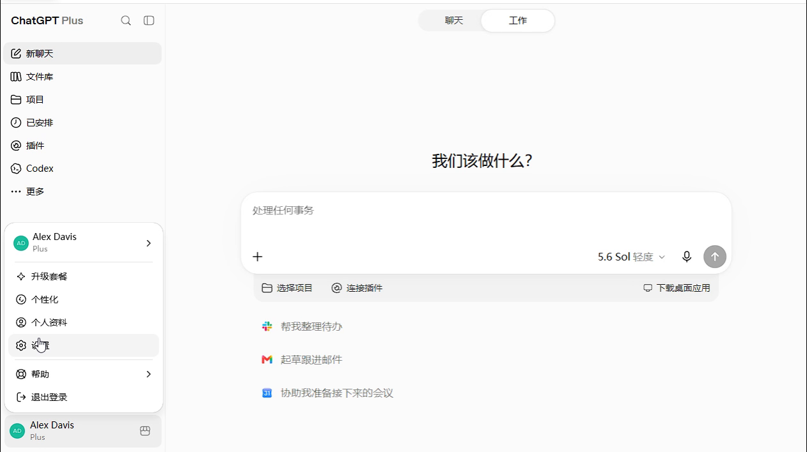
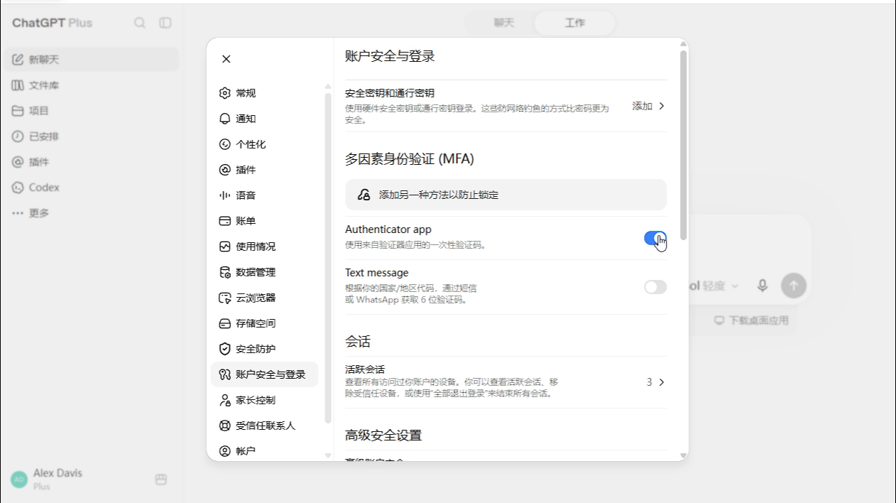
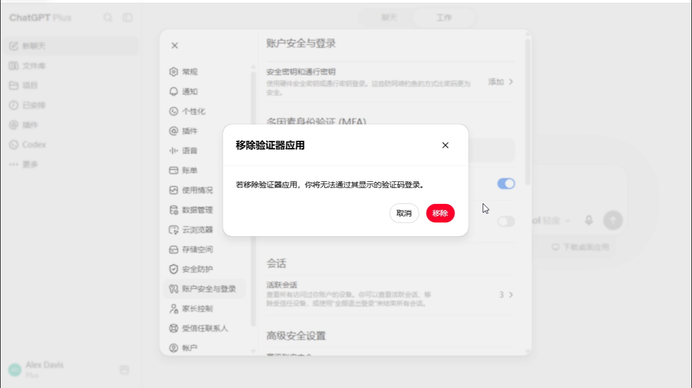
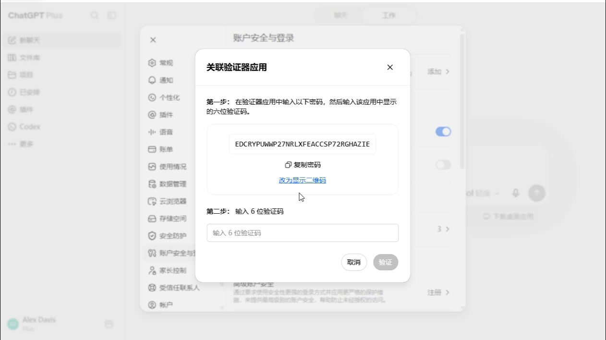
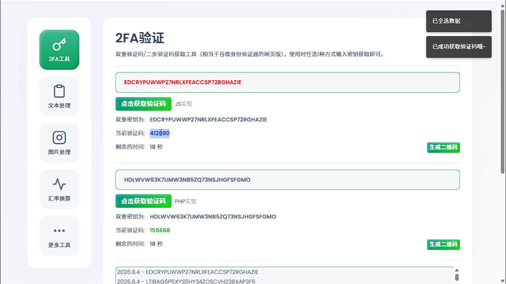
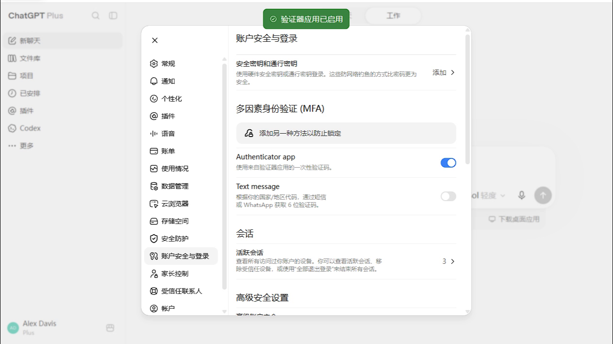
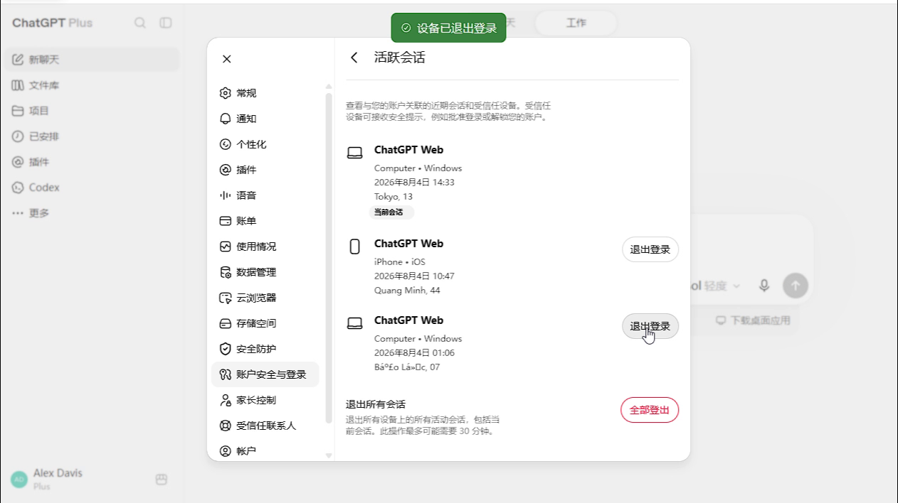

打开 ChatGPT 设置
登录 ChatGPT，点击左下角账号头像或名称，在弹出的菜单中选择“设置”。

图 1：从账号菜单进入设置
关闭旧验证器、绑定新的 2FA 密钥，并退出不需要的其他登录设备
视频时长约 37 秒。若在线播放不流畅，可点击下载视频后观看。
登录 ChatGPT，点击左下角账号头像或名称，在弹出的菜单中选择“设置”。

图 1：从账号菜单进入设置
在设置左侧选择“账号安全与登录”，找到“多因素身份验证（MFA）”下面的 Authenticator app。

图 2：找到 Authenticator app 开关
关闭 Authenticator app 开关，页面弹出“移除验证器应用”时点击“移除”。旧 2FA 密钥会停止使用。

图 3：确认移除旧验证器应用
再次打开 Authenticator app 开关。页面会显示一条新的密钥，也可以切换为二维码。立即复制并保存这条新密钥。

图 4：复制新的 2FA 密钥
把新密钥添加到 Google Authenticator、Microsoft Authenticator、2FAS，或粘贴到下方本页生成器中，获取当前六位验证码。

图 5：使用新密钥获取验证码
密钥只在当前浏览器中计算，不会上传到服务器。
回到 ChatGPT 的“关联验证器应用”窗口，输入新密钥生成的六位验证码并点击“验证”。顶部出现“验证器应用已启用”即表示更换成功。

图 6：确认新验证器已启用
返回“账号安全与登录”，进入“活跃会话”。保留当前设备，退出其他不认识或不再使用的会话；也可以点击“全部登出”后重新登录。

图 7：清理其他登录设备